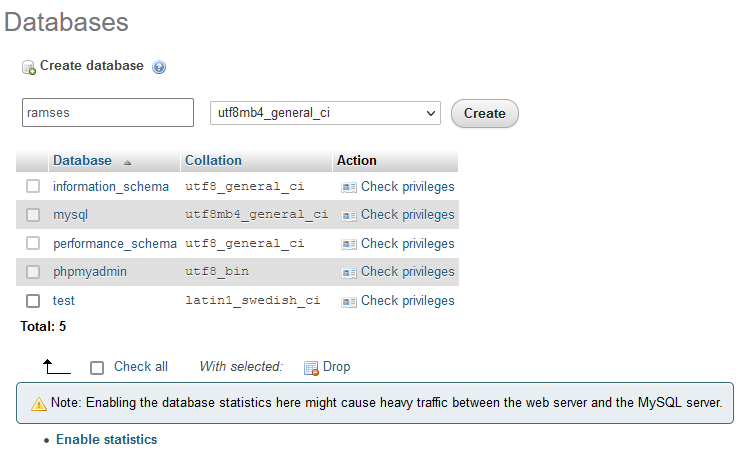

Ramses Server installation
Ramses Server runs on very standard web servers, with the usual Web Server / PHP / mySQL stack. That means you can install it on almost any desktop or server computers, private server, shared hosting, workstation, Raspberry… It does not need much resources.
Prerequisites
Ramses Server must be installed on a computer with:
- An http web server like Apache
- PHP 7
- An acces to a mySQL server and a dedicated database.
The recommended configuration is a standard AMP stack (Apache - mySQL - PHP), with at least 2GB of RAM if the SQL server is on the same computer than the Apache server.
- The needed space for the Ramses Server files (PHP) is only
300 KB! 50 MBshould be more than enough for the vast majority of users for the mySQL database.
Note
As Ramses is still in development, the only compatible SQL database is mySQL. We may add support for other databases in the future, include SQLite so the Ramses Server could be use without an actual SQL database.
We provide a detailed, step-by-step guide to help you install your own web server satisfying these requirements on Windows, Linux or Mac OS if you need to, before installing the Ramses Server: install your own webserver.
Standard Installation
- Create a new base on the SQL server, along with its user and password.
- Un-Zip the Ramses Server you’ve downloaded.
- Edit
config.phpwith needed info. - Copy the Ramses Server files to the web server (you can just copy the
ramsesfolder from the ZIP archive). - Go to
http://your.server/ramses/install(if you’re running your own local server, this is probably something likehttp://localhost/ramses/install) - Delete the
installfolder from the server.
The default user for Ramses is Admin with the password password. You should start by changing this name and password using the Ramses Client Application.
config.php
The config.php file you have to edit looks like that:
// ==== SQL SETTINGS ====
// Host URL
$sqlHost = "localhost";
$sqlPort = 3306;
// Database name
$sqlDBName = "ramses";
// User
$sqlUser = "ramses";
// Password
$sqlpassword = "ramsesdbpassword";
// Table prefix
// DO NOT CHANGE THIS, not working yet
$tablePrefix = "ram";
// ==== SESSION SETTINGS ====
// Session timeout (seconds)
// The client will be disconnected after being idle for this time
// 30 minutes by default (1800) are more than enough:
// The official client makes a call at least every 2 minutes by default.
$sessionTimeout = 1800;
// Max Session timeout (seconds)
// The client will be disconnected no matter what after this time
// 5 hours by default( 18000 )
$cookieTimeout = 18000;
Hint
You will need your database information to configure the Ramses Server to use it. If you don’t know how to do that or if you’ve just installed your own web server following our instructions, read the next section first.
$sqlHostis the url or IP of your MySQL server. If you’ve installed your own server locally, you can leave it to"localhost". Don’t forget the quotes!$sqlPortis the port used by the MySQL server.3306is the default for most installations, if you need something different, your hosting provider should tell you.$sqlDBNameis the name of the specific database you have to create for Ramses. Read below to learn how to create it with phpMyAdmin; the procedure can be different according to your hosting provider.$sqlUseris the name of the specific MySQL user you have to create for Ramses. Read below to learn how to create it with phpMyAdmin; the procedure can be different according to your hosting provider.$sqlpasswordis the password of the specific MySQL user you have to create for Ramses. Read below to learn how to create it with phpMyAdmin; the procedure can be different according to your hosting provider.$tablePrefixis a prefix which will be used for the name of the database tables used by Ramses. As soon as this will be implemented, it will allow you to share a database with other instances of Ramses and even any other application (for example if your provider doesn’t allow you to create more databases on your server).
Tip
If you know what you’re doing, you can actually already change the table prefix, but Ramses will be installed using the default prefix anyway. That means you have to install Ramses with this default ram prefix, then rename all the tables with a new prefix, and finally change the prefix in config.php.
Preparing the database
Whether you’ve installed your own web server (maybe by following our procedure in order to test the Beta Version of Ramses without using an online server) or you’ve order a shared or private hosting, you will need to create a database to be used by Ramses on the MySQL server.
Most of the time, you can do this with phpMyAdmin, although the procedure can be different depending on your web hosting provider. Here are some explanations about how to do that with phpMyAdmin.
-
First, go to the phpMyAdmin web interface. If you’ve installed your own web server locally, this is probably
http://localhost/phpmyadmin. -
Create a new database: on the left panel, click on New.

- Choose a name, for example
ramsesand click on Create. This is the name of the database which will be used later in the Ramses Server configuration.

- The new database should be automatically selected; if not, click on its name on the left panel.
Now let’s create a new user for Ramses: click on the Privileges tab.

- Click on Add user account under the New section.

-
Set the basic login information. The user name can just be ramses; the user name and password will be used in the Ramses Server configuration later. If your using your own local server, it is better to set the Host name to be Local / localhost.
-
Leave all other options to their defaults, and click on Go at the bottom of the page.

-
Leave all these options to their defaults, and click again on Go.
-
That’s all! you’re ready to finish the installation of the Ramses Server.